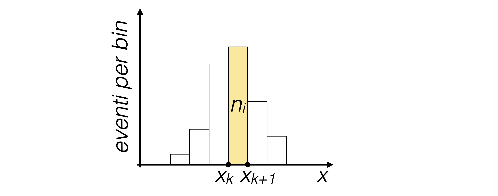
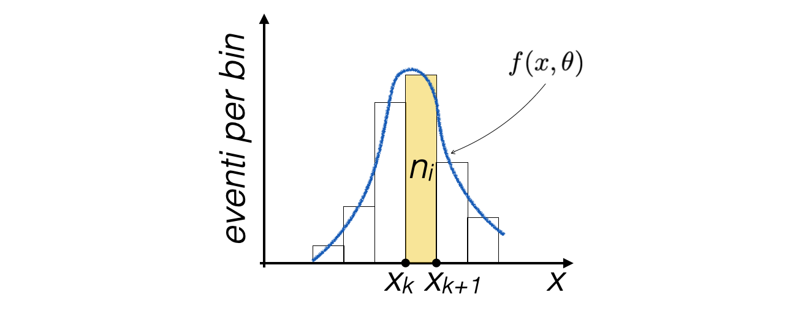
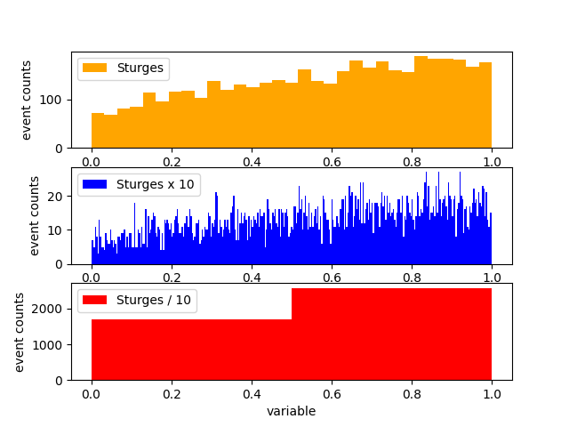
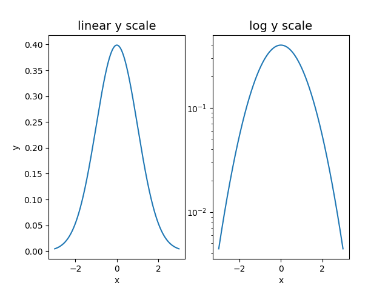
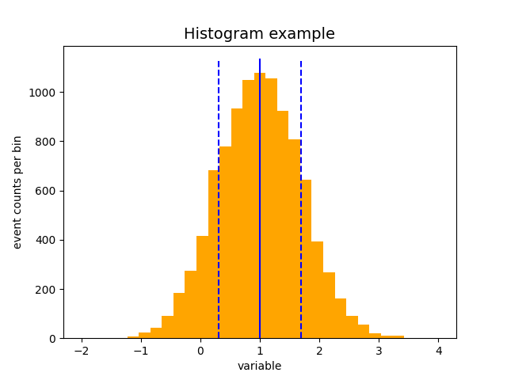

3. Data Visualisation with Python#
3.1. Reading and writing text files with Python#
It is frequently useful to save data on text files and to be able to recover them for a later use, either to avoid inserting them one by one during a script execution, or to have them saved in a separate place with respect to the script source code.
GOOD PRACTICE: data you produce/record are better saved on disk for a later use
Generate once, process multiple times
Avoid hard-coded values
Multiple file formats are available (binary formats, structured methods,…) for this course we will look at txt files
3.1.1. Writing information on txt files#
The writing procedure may be done in the following way:
with open ('sample.txt', 'w') as output_file : for item in sample: # write each item on a new line output_file.write (str (item) + '\n')
The
samplevariable is an existing collection of numbersthe printout adds a carriage return symbol
\n, so to ensure that the numbers are saved in different lines
Important
Advantages |
|---|
easy: you can read it independently
language agnostic
easy to check the reading program correctness
Disadvantages |
|---|
slow
inefficient for large amount of data
may require type conversion, as the writing and reading is through strings
3.1.2. Reading information from txt files#
The reading procedure may be done in the following way:
with open ('sample.txt') as input_file: sample = [float (x) for x in input_file.readlines()]
The
samplevariabile gets created while reading the text fileThe
readlines ()function returns strings, which need to be converted into floats for them to be used as sample elements
Note
NumPy offers an alternative way to read data from text files and store them in arrays:
sample = np.loadtxt ('sample.txt')
3.2. Histograms#
Histograms are a graphical representation of the distribution of a sample of random numbers {xi}i=1,..,N usually called events.
An example of a sample of events is the set of measurements collected during an experiment.
3.2.1. Histogram Bins#
For a random variable of interest x, its interval of definition is divided into adjacent and disjoint sub-intervals delimited by {xk}
The k-th interval is bounded between xk and xk+1
Usually, these intervals are called bins
An histogram is the collection of event counts that fall within each interval

The visualization of a one-dimensional histogram typically shows:
On the horizontal axis, the interval of definition of the variable x
On the vertical axis, the counts corresponding to each bin
Above each bin, a vertical bar as high as the counts in the bin
3.2.2. One-Dimensional Histograms and Probability Density Distributions#
As the bin size approaches infinitesimal, an histogram becomes a continuous function

If the content of each bin is divided by the total number of events N, this function becomes normalized, thus an histogram approximates a probability density distribution
3.2.3. Histogram building and representation in matplotlib#
Given a sample of numbers, its visualisation in a histogram form may be obtained with the following instructions:
fig, ax = plt.subplots (nrows = 1, ncols = 1) ax.hist (sample, color = 'orange', )
where the input
sampleis a collection of valuesThe x axis range and its division into bins is automatically performed by the
histfunction
3.2.4. Histogram drawing options control#
Very frequenly – always in this course – one wants to have control over the x axis range and binning, for a proper statistical use of the histogram and for comparisons across histograms.
This may be achieved by explicitly defining the bin boundaries and providing them as input with the
histfunction:bin_edges = np.linspace (xMin, xMax, N_bins) print ('length of the bin_edges container:', len (bin_edges)) fig, ax = plt.subplots (nrows = 1, ncols = 1) ax.hist (sample, bins = bin_edges, color = 'orange', )
3.2.5. The number of bins#
Depending on the sample size, the number of bins shall be adapted:
on the one hand, with more events it may be increased, with very few events it has to remain small to gather at least some events per bin
on the other hand, it’s of no use that the size of each bin is much smaller than the typical shape changes in the histogram

The choice of
N_binsis therefore relevant for a proper representation: a recipe frequently used is the so-called Sturges’ rule:import numpy as np def sturges (N_events) : return int( np.ceil( 1 + np.log2(N_events) ) )
which may be used as follows in the drawing instructions:
N_bins = sturges (len (sample)) bin_edges = np.linspace (xMin, xMax, N_bins)
3.2.6. Logarithmic scales#
When the values in different bins change considerably, it can be convenient to visualize histograms on a logarithmic scale (along the horizontal or vertical axis), to improve the readability of the result
Being a different visualization of the same content, this operation is performed using a method of the
axesobjectax.set_yscale ('log')
Clearly, the zero of the logarithmic scale axis cannot appear in the images

3.3. Calculate and draw sample moments#
Given a sample, its moments may be calculated by replacing expectation values with sample averages, for example:
\[ E[x] = \int_{-\infty}^\infty x\:f(x)\:dx ~ \to ~ \sum^N_{i=1} x_i / N \]The corresponding
pythonscript to implement this call is then:return sum (sample) / len (sample)
the
pythonfunctionsumcalculates the sum of thesampleelementsthe
pythonfunctionlencalculates its number of elements
once the average is known, its drawing may be added on top of a histogram:
ax.hist (sample, bins = bin_edges, color = 'orange', ) vertical_limits = ax.get_ylim () ax.plot ([sample_mean, sample_mean], vertical_limits, color = 'blue')
to obtain the following visualisation

3.4. Data models#
Notable probability density function distributions exist in a pre-implemented form in the
SciPylibrary, which provides algorithms and data structures for scientific computing.The full list of available models may be found here
All continuous distributions take
locandscaleas keyword parameters to adjust the location and scale of the distributionfor the Gaussian distribution, the
locis the mean and thescaleis the standard deviation
Note
Probability density functions f are usually written for a standardized variable, and the
locandscaleparameters are used to generalise them, usually with the formula: $\( f(x, loc, scale) = \frac{1}{scale}f(\frac{x-loc}{scale}) \)$
3.4.1. Using a continuous probability density function#
A pdf object needs to be imported from the SciPy library to be used, as for example for the Gaussian distribution:
from scipy.stats import norm
The actual values of the pdf may be accessed through the
pdffunction:mean = 1. sigma = 0.5 x = mean + sigma / 2. print (norm.pdf (x, mean, sigma))
The values of the input parameters may be frozen once and for all:
norm_fix = norm (mean, sigma) print (norm_fix.pdf (mean))
Note
For discrete probability density functions (e.g. Poisson, Binomial),
for each single value on the domain axis a probability - not a density - is associated,
and the corresponding function is called probability mass function,
abbreviated as pmf.
3.4.2. The cumulative density function#
The function
cdfgives access to the cumulative density function of the model, for example in the case of a Gaussian distribution:print ('the value of the cumulative Gaussian distribution at its mean is: ' + str (norm.cdf (mean, mean, sigma)) )
3.4.3. Distribution momenta#
The pdf objects provide functions for the calculation of their momenta:
ave, var, skew, kurt = norm_fix.stats (moments='mvsk') print (ave, var, skew, kurt)
3.5. Function integration#
The SciPy library also contains a module dedicated to numerical integration of functions
3.5.1. Definite integral#
The function
quadcalculates definite integrals given the function and the integration rangefrom scipy.integrate import quad # definition of a polinomial function def polin(x): return x**2 + x + 1 area = quad (polin, 0., 4.) print ('area = ', area[0]) print ('absolute error estimate = ', area[1])
The
quadfunction returns both the integral value and an estimate of the absolute error on the integral
3.5.2. Integration over infinite ranges#
The
quadfunction works with infinity extremes, which can be expressed thanks to the numpy objectnp.inf:def expon (x): return exp (-1 * x) area = quad (expon, 0, np.inf)
3.6. Reading and writing data with numpy#
numpyoffers an alternative way to read data from text files and store them in arrays with a single command:sample = np.loadtxt ('sample.txt')
Important
Advantages |
|---|
The syntax is compact
The type conversion is automatic
Disadvantages |
|---|
Assumes one value per line
Assumes the same type for all values
3.7. Reading and writing data with pandas#
Pandas - Python, the Python Data Analysis library, is designed to handle multidimensional datasets, where each measurement contains several different readings
A sample of measurements is saved in an object called DataFrame
Is is represented as a table with one measurement per raw
Data index
Variable_1
Variable_2
…
Variable_N
0
x
y
..
z
1
xx
yy
..
zz
…
M
x_M
y_M
z_M
each
Variable_ican have a specific typeIn each row there’s a measurement
Each column corresponds to a specific reading (value, date, time, …)
3.7.1. Creating a DataFrame#
To create a
DataFramea list of dictionaries must be provided with the column variables as keys:import pandas as pd # Collect data data = [] for i in range(5): data.append({'Name': f'User_{i}', 'Age': 20 + i}) # Create DataFrame df = pd.DataFrame(data)
Or add the elements row by row after declaring the columns:
import pandas as pd # Create empty DataFrame with defined columns df = pd.DataFrame(columns=['Name', 'Age', 'City']) # Fill row-by-row for name, age, city in [('Alice', 25, 'NYC'), ('Bob', 30, 'LA')]: df.loc[len(df)] = [name, age, city]
3.7.2. Reading a Dataframe#
Information in Dataframe
dfcan be accessed as:# extract the named column as a list Column_as_List = df['column_name'].values() # extract the named column as a numpy array Column_as_Array = df['column_name'].to_numpy()
3.7.3. Filtering a Dataframe#
During the data analysis, sometimes only part of the dataset is of interest
Only some columns of a
DataFramemay be retained, by filtering the entriesdf_subset = df[["variable_X","variable_Y"]]
Only some rows of a
DataFramemay be retained:df_singleRow = df[df['filter_column_name'] == value] # and then extract the values SingleRowValue = df_singleRow['column_name'].to_numpy()
Complex selections may be operated:
df_MultiCondition = df[(df['filter_column_name'] > valueMin) & (df['filter_column_name'] < valueMax)]